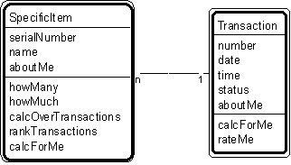

Pattern #5. "Specific Item - Transaction" Pattern // transaction patterns

Typical object interactions
- howMany --> calcForMe
- howMuch --> calcForMe
- calcOverTransactions -->calcForMe
- rankTransactions --> rateMe
Examples
- Specific item: specific aircraft, specific container, specific ship, specific register, specific vehicle.
- Transaction: agreement, assignment, authorization, contract, delivery, deposit, incident, inquiry, order, payment, problem, report, purchase, refund, registration, rental, reservation, sale, shift, shipment, subscription, time charge, title, withdrawal.
Combinations
Pattern #3. "Participant-Transaction"
Pattern #4. "Place-Transaction"
Pattern #5. "Specific Item - Transaction"
Pattern #6. "Transaction - Transaction Line Item"
Pattern #7. "Transaction - Subsequent Transaction".
- Also, using "specific item" as a container:
Pattern #14. "Container-Content"
Pattern #15. "Container - Container Line Item."
Related strategies:
Strategy #17. "Select Transactions" Strategy
Strategy #54. "Establish Transaction Attributes" Strategy
Strategy #76. "Establish Transaction Object Connections" Strategy
Strategy #96. "Establish Transaction Services" Strategy